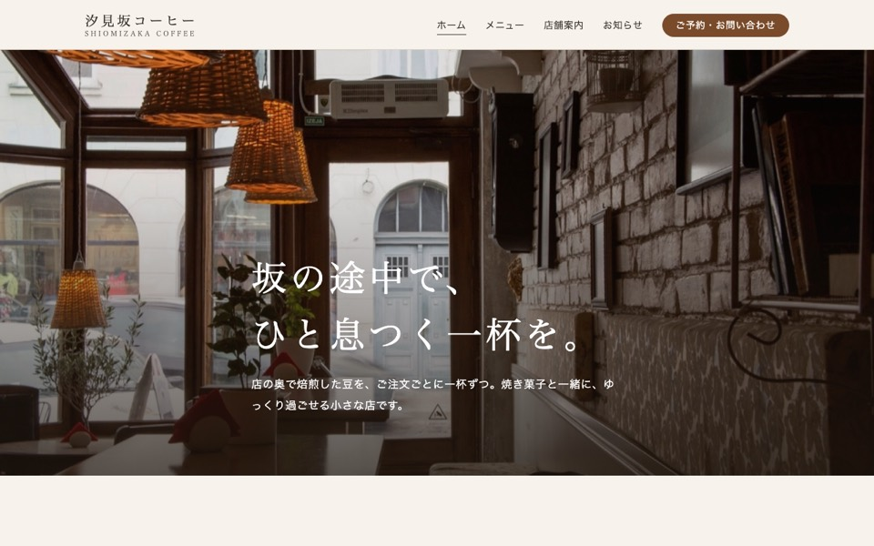

店舗のホームページ
汐見坂コーヒー（カフェ・5ページ）
トップ、メニュー、店舗案内、お知らせ、ご予約・お問い合わせの5ページ構成。写真と余白を主役に、落ち着いた雰囲気でまとめました。
- 見どころ
- 複数ページの設計、スマートフォン用のメニュー、予約フォーム、略図のアクセスマップ
- 作り方
- HTML と CSS のみ。メニューやお知らせを、HTML の決まった場所に足して更新できる構成